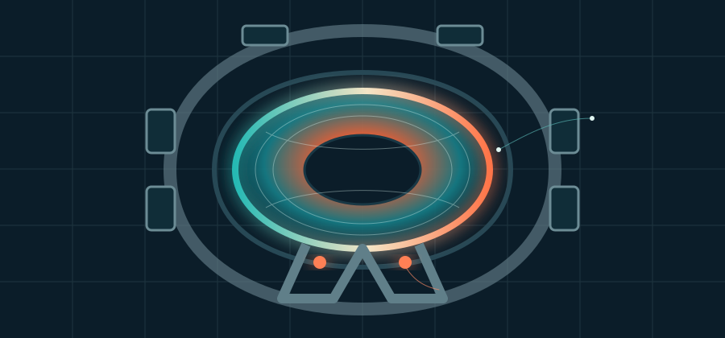
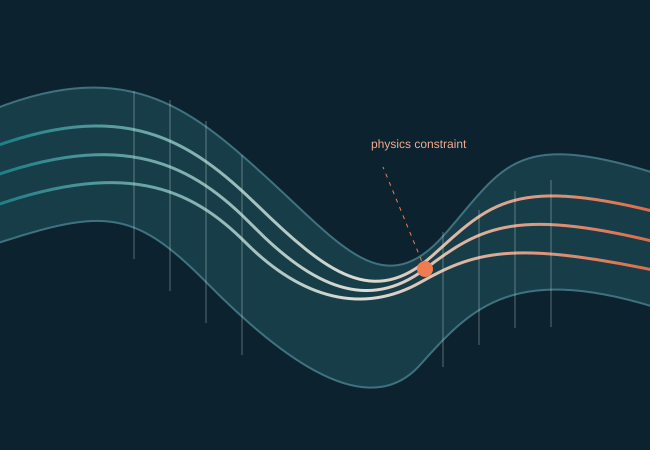
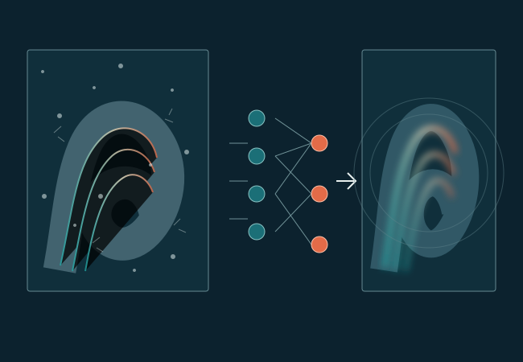

Research
Models that connect
data and dynamics.
I work at the intersection of machine learning and computational physics, developing methods that are fast enough to scale and structured enough to trust.

Physics-constrained coupled neural differential equations for one dimensional blood flow modeling
A physics-constrained framework delivers rapid cardiovascular simulations with markedly lower errors than traditional one-dimensional finite-element models.

A comparison of machine learning methods for recovering noisy and missing 4D flow MRI data
A comprehensive evaluation of classical and deep-learning methods for denoising and imputing cardiovascular flow measurements.
Complete record